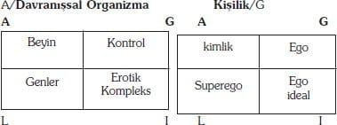
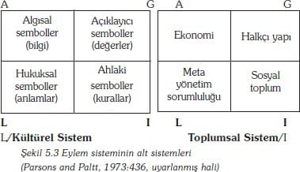
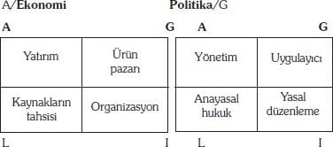
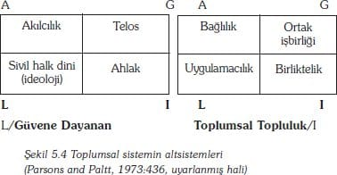
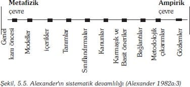
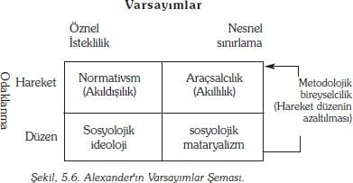
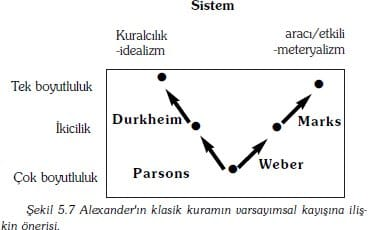

Bu yönelimler, her bir motivasyonel yönelim tarzı içinden seçimler yaptığı için kılavuz olan değer taahhütleri (value commitments) tarafından 'idare edilirler'. O halde buna paralel olarak:
• Kavramsal değer-yönelimleri (value-orientations), olguların muhakemesinin (judgements) geçerliliği için standartlar sağlar.
• Beğeniye yönelik (appreciative) yönelimler, beğeni ve istek (appetite) standartlarını sağlar.
• Ahlaki yönelimler, eylemlerin uygunluğu için standartlar sağlar.
O halde, kişilik içerisinde aktör tatmin aramaktadır ancak sürekli olarak tatmini, çevreden alınan değer-taahhütlerine (value-commitments) karşı kontrol etmektedir. Parsons'un düşüncesinin Freud'çu yönü budur: motivasyonel yönelim 'id'e karşılık gelmekte, değer-taahhüdü ise süperegoya tekamül etmektedir (bakın 4. bölüm).
İçselleştirilmiş değer-taahhütleri kişiliğe kültürel sistemden girer. Kültür '"yönlenme ve davranma şekillerinden/tarzlarından" oluşmuştur ve bu tarzlar, 'belirli ve somut bir şekilde dışa vuran' anlamlı semboller şeklinde tezahür etmektedir' (1951:159). Kültürün unsurları değer-yönelimleri ve eylem-yönelimleridir. Ana plan kullanıldığında üç tür değer-yönelimi için üç sembol kümesi vardır;
• İnançlar ve düşünceler kavrayışı sembolize eder.
• Anlamlı semboller (örneğin, bayraklar, logolar, müzik, sanat) duyguların iletişimini sağlar.
• Norm koyucu ve düzenleyici standartlar ise değerlendirme yollarıdır.
Normatif standartlar, kuramda merkezi bir yer bulur ve bundan dolayı ana plana göre daha alt sınıflara ayrılmışlardır:
• Kavrayış standartları, gerçek inançlardan farklıdırlar – düşünce ve inançların nasıl değerlendirilebileceği hakkında bir dizi norm önerirler, örneğin, gerçeklik ya da geçerlilik kriterleri.
• Beğeniye yönelik standartlar, aynısını anlamlı semboller için yaparlar, örneğin beğeni/tat (taste) ya da güzellik ya da cinsellik kriterleri.
• Ahlaki standartlar, bu tür tüm normatif düşünceleri, sonuçlarını tüm eylem sistemi için tesis eden kriterlere gönderme yaparlar örneğin, adalet, doğruluk, haklılık, mülkiyet, ilahi kudret ya da ortak kader.
Son olarak, değer-yöneliminin üç kategorisinden birine ya da diğerine öncelik veren eylem-yönelimleri aşağıdaki şekilde sınıflandırılırlar;
• Araçsal (instrümantal), temel amacın verimli bir şekilde gerçekleştirildiği;
• Anlamlı, amaçların belirlendiği, ve
• Ahlaki, belirli bir tür amaç-belirleme ve amaç-araştırma kalıbının, yapılması doğru olan şey olup olmadığına karar verildiği
Parsons'a göre norm koyucu standartlar eleştireldir, çünkü harici olmaları ile aktörlerin hem kendi davranışları hem de objelerin değer-durumlarına ilişkin yargılamada bulunmasına izin verirler. Bu nedenden dolayı, tartışmaya yol açan bir formülasyonda, Parsons'a göre "Kültürel kalıplar şeklinde tezahür eden değer-yönelimleri ... bir topluluğun ortak değerleri olma potansiyelini taşırlar" (1951: 165). Bu potansiyellik, bu tür normatif kalıpların, toplumsal etkileşimleri aşırı derecede etkilediği ve aktörlerin sürekli olarak diğerlerinin davranışlarına ilişkin beklentilerini belirtme yolları aradığı gerçeğinden ortaya çıkmaktadır. Bunu yaparken, tek bir değer-yönelim takımı inşa edecek ve geliştireceklerdir.
Bir bakıma, kültürel sistemlerin ve kişilik sistemlerinin toplumsal sistem içerisinde birbirleriyle karşılaştıkları ve mücadele ettikleri söylenebilir. Bu, isteklerini gerçekleştirerek tatmin arayan bir bireyin yine kendisi gibi tatmin arayan diğer aktörlere karşı koyacağı ve tartışacağı sahadır. Bu, toplumsal sistem içerisinde Parsons'un sürekli olarak tutarlılığa doğru gerilim dediği bir eğilim ortaya çıkartır. Bu bakış açısı içerisinde, aktörler sürekli olarak düzene ve tahmin edilebilirliğe/önceden kestirilebilirliğe (predictable) yönelmiştir – diğerleri ile anlayış paylaşımı arayacaklardır, çünkü bu karşılıklı beklentileri tesis ederek durumu dengelemektedir. Bu tür bir anlayışı tesis etmenin aracı etkileşimdir. Bununla birlikte, toplumsal sistem içerisinde bu etkileşimin kişiler arasında değil, roller arasında olduğu anlaşılır. Bir rol, kişiliğin belirli bir toplumsal sistem ile kesişmesidir. Örneğin, aktör Luciano Pavarotti'de olduğu gibi, toplumsal sistemin televizyon endüstrisi ile kesişimi opera sanatçılığı rolüdür – ancak rol kişiliğin bir parçası olup, oğul, araba sürücüsü, yurttaş, vs. gibi diğer parçaların yanında bulunmaktadır. Etkileşim kalıpları rol takımları arasında dengelendikçe, amaç takımları toplumsal sistemin rol-üyeleri (role-members) arasında paylaşılmaya ve etraflarında sınırlar tesis edilmeye başlar. Toplumsal sistemin kendisi topluluk ya da aktörler topluluğu olarak kabul edilebilir. Aynı şekilde topluluk içindeki elemanların da birbirleriyle etkileşime girdiği kabul edilebilir.
Yine, ana planı kullanarak, toplumsal sistem içerisinde etkileşimlerin yönlenebileceği üç problem kümesi ve bu şekilde üç tür rol içeriği tanımlamak mümkündür (Parsons, et. al. 1951: 208-21). Bunlar:
• Müdür, fabrika sahibi, sanatçı gibi ekonomik roller tarafından karşılanacak ve maddi kaynakların ve mükafatların güvence altına alınacağı, işleneceği ve tahsis edileceği araçsal problemler (instrümantal problems);
• Aşık, anne, eğlendirici gibi anlamlı rolleri ortaya çıkaran ve duygusal ilişkiler tesis eden dile getirimsel problemler (expressive problems) ve
• Politikacı, rahip, öğretmen gibi liderlik rollerine yol açan ve toplumsal sistemin dayanışmasına ilişkin bütünleştirici problemler (integrative problems) dir.
Bununla birlikte, bu tür etkileşim kalıplarına hareket serbestisi verilmez fakat bu tür etkileşim kalıpları, kurumsallaştırılmış değer-yönelimleri tarafından yönlendirilir ve sınırlandırılırlar. Kurumlar, kendilerini oluşturan rollerin uygun olduğu rol-modellerdir (role-patterns) – örneğin tek eşli evlilik ve özel mülkiyet (1991; 39-40). Yine bunların üç türü vardır:
• Rolleri ve kalıplarını tanımlayan ilişkisel kurumlar (sözleşme, kan bağı, arkadaşlık, istihdam edilme).
• Çıkarların elde edilmesini sağlayan ortak bir çaba (kar, otorite, topluluk) sonucu oluşan düzenleyici kurumlar; ve
• Kültürün (din, bilim, eğitim) içeriğini oluşturan kültürel kurumlar
Bir Kültür Olarak Din ve Bir Din Olarak Kültür
Şekil 5.2'deki şemanın açıklanmasında bu üç biçimin her bir yapısı arasında basit bir benzerlik ve bu tür bir statik dengenin olduğunu varsaymamak gerekir. İlkin, nerede sistemler arasında bir bağlantı varsa, orada, kategoriler arasında çoklu bir etkileşim vardır. Örneğin, araçsal (instrumental) etkileşimde, aktörün bireysel amaçlarını bir istekler listesinden seçmiş ve durumu belirlemiş olması gerekir. İkincisi, bunlar, şimdiye kadar tartışıldığı gibi, ciddi manada, içeriksiz kategorilerdir. Örneğin, belirli olmayan inanç ya da düşünce, kültür içinde ve araçsal (instrumental) eylemin belirli olmayan biçimi (örneğin, kapitalistik, sosyalist ve feodal) toplumsal sistem içinde belirtilir. Bu içerik, görüleceği gibi, kalıp değişkenler tarafından önceden hazırlanır (bölüm 2'ye bak).
Daha da önemli olanı, üç sistem arasındaki trafik, tek yönlü değildir –sadece dört geçişenlik (interchange) belirtilmektedir. En önemli eleştiriden zaten bahsedilmişti – kültürel sistem içine yerleştirilen normatif standartlar, değer yönelimleri şeklinde kişilik içinde içselleştirilir. Kişilik ile kültür arasında bundan başka dolaylı bir bağlantı daha vardır. Toplumsal sistem içindeki rollerin oluşumu gibi kültürel sistemin unsurları, sürekli olarak sabitlenmiş bir şekilde durur ve bunlar, roller arasındaki ilişki ya da örnekler olarak düşünülebilir. Bu, eylem yönelimlerinin (action orientations) kurumlara dönüştürüldüğü bir kurumsallaşma sürecidir. Rol kalıpları hakkında bir şeyler öğrenilen bu süreçte, toplumsallaşmanın içeriğini, kurumlar kendi kendilerine oluştururlar. Geride kalan mübadele, kişiliğin haz veren şeyleri araştırmak için, rolleri güçlendirdiği ilişki (involvement) sürecidir.
Bu mübadele modeli, Parsons'ın teorisindeki bir çok eleştirinin odak noktası olmuştur. Üç sistem arasında simetri bulunmadığını varsaymasına dair itirazlarına rağmen, kültürü özellikle de kültür bileşenlerini gözden kaçırmanın zor olduğunu belirtir ve ona göre, bu üç sistem arasındaki simetri başka şeyleri de belirlemektedir. Kişilik içindeki motivasyonun yanında uzanan kültüre itiraz ettiği halde, kişiliğin kültürü etkilemesi yönünde hiçbir araca müsaade etmemektedir– trafik tamamen tek yönlüdür. Sistem içinde denge ve tutarlılık yönünde kuramsallaştırma olursa, daha sonra kültür toplulukları imtiyazlı olacak ve bireysel kişilik farklılıkları daha da önemli hale gelecektir. Parsons'ın söylediği gibi: 'Kişilikleri oluşturan öğelerin içselleştirilmiş ihtiyaç-duygu yapısına sahip ortak değer modellerinin bütünleşmesi, toplumsal sistem dinamiklerinin en öz fenomenidir-olgusudur' (1991: 42).
Parsons'ın kültürel sisteminin Durkheim'ın kollektif vicdan'ına daha çok benzemesinin nedeni, Parsons'ın onu diğer sistemlerden daha farklı kavramsallaştırmasıdır. Kişilik ve toplumsal sistemler, aktif ve dinamiktirler ve bunlar, enerjilerini aktörlerin motivasyonlarından alan enerji ile şarz edilirler fakat, kültürel sistem enerji girdilerini kabul edebilecek bir kapasiteye sahip değildir: 'Bir kültürel sistem, somut bir eylem sisteminin parçası olmadıkça "işlemez", sistem sadece sistemdir (it just 'is') (1991: 17). Bireysel motivasyonlar için bir çıkış yolu olmadığı kabul edilecek olunursa, o zaman birey, sistem tarafından bastırılmış olur ve insanlık toplumsal olmaktan çıkar" (bak Wrong: 1976).
Sibernetik Hiyerarşi: Daha fazla Bilgi
Yukarısı, Parsons'ın orta dönem kariyerinde, yani, İkinci Dünya Savaşı'ndan hemen sonraki döneminde geliştirdiği, kuramsal sistem yönelimini temsil etmektedir. Bu, Parsons'ın kuramsallaştırmasının en önemli noktası olarak görülebilir ve kesinlikle O'na karşı yönlendirilen eleştirinin odak noktasıdır. Bununla birlikte, bölüm 4'de tartışıldığı gibi, bu materyalin hemen yayınlanmasından sonra Parsons, Bales olarak adlandırılan bir küçük-grup kuramcısına (a small-group theorist) rastlamış ve çalışması, tamamıyla daha yapısalcı bir karakteristiğe bürünmüştür. Entelektüel yönelimdeki bu değişimin sıradan bir görünümü, fakat bir çoğunun çıkarına görüneni, Parsons'ın üçleri (eylem sistemleri, objelere yönelme modları/tarzları) ya da beşleri (kalıp değişkenler) düşünmeye son vermesi ve bunların yerine dörtlü sınıflamayı (fonksiyonel zorunlulukları) standartlaştırmasıdır. 4. Bölümde bahsedildiği gibi, ortaya çıkan sonuçlardan bir tanesi de, Parsons'ın eylemin alt sistemleri için davranışsal organizmacılığı (behavioural organism) ilave ettiğidir. Başka bir sonuç ise sistem içinde sistemlerin ayrıntılı bir şekilde açıklanmasının bir zihin meşguliyeti olduğudur, bu o kadar ilerlemiştir ki son yorumcular (örneğin Rocher 1974; Craib 1984) Parsons'ın çalışmasının bu evresine sık sık gereğinden fazla vurgu yapmışlardır.


Küçük gruplarla ilgili Bales'ın çalışması, AGIL harfleri (A:adaptation, G:goal attainment, I:integration, L:latency ya da latent maintenance, çn.) olarak bilinen dört işlevsel zorunluluğun yeni bir ana planını Parsons'a daha önceden hazırlamıştır. Şekil 5.3 genelde Parsons'ın eylem sistemini nasıl kavramsallaştırdığını gösterir. Gizil bileşenler ve bütünleşme içinde bozulan değerlendirici tarz (evaluative mode) olan genel değişikliğe dikkat etmek gerekir. Aynı zamanda, toplumun alt-sistemlerinin de yeniden açıkça belirtildiğine dikkat edilmelidir. Özellikle, I kutusu, toplumsal cemaat ile çok sıkı bir şekilde ilişkilendirilmiştir bu da hukuk sistemi ile mücadele eden bir kısım olmuştur. Dikkat edilmesi gereken unsurlardan bir tanesi de, 'gizil muhafaza kalıpları (latent pattern-maintenance ve gerilim yönetimi (tension management)'altsisteminin toplumu 'güven içinde' tutan güvene dayalı denetim altsistemden (fiduciary subsystem) oluştuğudur. Bu anlayış (respecification), üniversitenin toplumsal hayattaki yerinin öneminin sağlanması için Parsons'ın görüşleri ile uyum içindedir (özellikle bak Parsons ve Platt 1973). Kültürel sistem ile ilgili önemli bir başka gelişme de, diğer üç alt-sistemin etkisine artık kapalı olmasıdır. Daha doğrusu her biri, diğerlerinin etkisine izin veren her bir alt sistemin kendi ortalama değişimini (exchange) (AGIL sırası içinde, anlayış/bilgi (intelligence), performans kapasitesi, etki, ve durumun tanımlanması) üretir.


Şekil 5.4 toplumsal sistemin bileşimindeki alt-sistemlerin yeni organizasyonlarını göstermektedir. Özellikle, Parsons ve Smelser'ın AGIL planını ilk önerdiklerinde çalışmayan toplumsal topluluk ve güvene dayanan (fiduciary) alt sistemlerin detaylarını göstermektedir. Diyagramda kullanılan terimler Parsons'ın kendisine ait olmadığı halde, güvene dayanan sistem ile ilgili yeni plan, önceki göstergelerin altında gruplandırılan yapısal anlaşmaların/düzenlemelerin (arrangements) görünüşe göre gelişigüzel toplanmış mantıki bir düzenlenmesini ifade eder. Genelleştirilmiş medya vasıtasıyla birbirine bağlanan eylem sisteminde olduğu gibi, toplumsal sistemin elemanlarını birbirine bağlayan bir medya da vardır. AGIL sırası ile bunlar; para, güç, etki, taahhüt/bağlanma (commitment) dır.
İlk bakışta, Parsons savaş sonrası dönemin kültürel veya dinsel determinizmini gözden kaçırmış gibi görünebilir, fakat durum gerçekte böyle değildir. Şekil 5.3 ve 5.4 sadece alt-sistemlerin ve sistemlerin yatay düzenlemelerini/anlaşmalarını göstermektedir. Fakat aynı zamanda dikey bir anlaşmaya/düzenlemeye de sahiptir. Bu anlaşma/düzenleme, basmakalıp bir şekilde "sibernetik" hiyerarşi olarak bilinir (Parsons 1966: 28-9). Bu hiyerarşi, AGIL sıralaması içinde tersten en başa doğru organize edilir. Bir sistem ne kadar çok bilgi içeriğine sahipse o kadar yüksek; ne kadar çok enerji içeriğine sahip olursa da o kadar düşük olur. Kabaca konuşacak olursak, daha-yüksek düzen sistemleri (higher-order systems) daha düşük düzen sistemleri (lower-order systems) içinde üretilen enerjiyi, kullanmak için birleştirirler ancak bunu enerji var olduğu sürece yapabilirler. Böylesi daha düşük düzen sistemleri, üst düzen sistemlerinin (upper-order syystems) imkanlarını sınırlar, fakat üst düzen sistemleri, daha düşük düzen sistemlerini kontrol eder ve yönetir. Bu, toplumsal sistem içinde yöneten sistemin güvene dayalı olmasına (fiduciary), denetlemesine rağmen, genel eylem sistemi içinde yönetici sistemin kültürel olduğu anlamına gelmektedir. Yaşayan şeylerin genel sistemi içinde, eylemin, 'nihai gerçeklikten' ya da 'doğaüstü' şeylerden daha sonra geldiği de anlaşılmaktadır. Dinsel saptama, bu şekilde sağlama alınmış gibi görünür. Aslında, Parsons, sistem teorisi üzerine ömrü boyunca yaptığı çalışmayı bu yönerge içinde açık bir ifadeyle sonuçlandırmıştır:
Eylem sistemlerinin şekillenmesinde sibernatik olarak en yüksek elementlerin öneminin vurgulanması anlamında, ben toplumsal deterministten çok bir kültürel deterministim. Benzer bir şekilde, toplumsal sistem içinde, kural koyucu (normative) unsurların, toplumsal değişim için kurucu birimlerin 'maddi çıkarlardan' daha önemli olduğuna inanırım [1966: 113].
Yeni-işlevselcilik: yeniden kazanılan cennet
Parsons'ın kuramı, modern zamanlarda, toplumsal olana ilişkin genel ve öze hitap eden bir kuram sağlama bakımından en başarılı bir girişim olarak durmaktadır: Bu kurama sadece Shultz ve Althusser meydan okuyabilmiştir. Postmodern kuramsal dönem, Habermas'ın (bkz., gelecek bölümler) çalışmalarının bir fener gibi durduğu, benzer bir cesaret düzeyinden yoksun durmaktadır. Postmodern dönemde, çoğu sosyolojik kuramsallaştırmalar, ya tarihselciliğe (historicim) (örneğin, Foucault, Mann ve Wallerstein) yeniden başvurmuşlardır ya da üst-kuramsal (meta-theoretical) özellikte olmuşlardır. Toplumun kuramından çok kuramların kuramının yapıldığı, türdeki ilk düşünce örneklerini, Alexander'ın (1982a; 1982b; 1983; 1984; 1988) öncülüğünü yaptığı, eskiyi yeniden canlandıran, yeni işlevsellik adıyla bilinen okul vermiştir. Yeni-işlevselcilik, Parson'cu düşüncenin yeniden canlandırılması için bir araç gibidir. Üst-kuramsal bir konuma almış olmasından dolayı ne kadar eleştirsek de, Alexander'ı, Amerikan sosyolojisini, özellikle, deneysel iddialarından, uzaklaştırarak, asıl temel olan kuramsal tartışmalara yeniden taşıdığı için, kutlamak gerekir.
|
Jeffrey C. Alexander |
| Amerikalı, Alexander, üniversite eğitimini, Harvard'ta üst lisan eğitimini ise Californiya Üniversitesinin, Berkeley kampusunda yaptı. Hayatının bu aşamasında, Yeni Sol Markxist biri olarak tanınmıştı; ancak, kuramsal ve siyasal yönelimi, 1970'li yıllarda, çoğulculuk ve işlevselciliğe doğru kaydı. Şu anda ise Los Angeles'ta ki Californiya Üniversitesi'nde sosyoloji profesörü olarak çalışmakta, yeni işlevselcilik adıyla bilinen sosyolojik düşünce akımının kuramcısı ve çağdaş sosyolojiyi yönlendiren bir avuç kuramcıdan birisi olarak bilinmektedir. |
|
Kaynak: Ritzer (1991:600-1) |
Tahmin Edici Kuram
Alexander geleneksel bilim görüşünü, yeniden nasıl kuracağını araştırarak işe başlıyor. Bilim, Şekil 5.5.'te gösterildiği gibi etkinlikler sürekliliği ile ilgilidir. Bazı etkinlikler, dünyanın deneysel gözlemlerine daha yakınken, bazıları daha metafizikseldiler ve çoğunlukla, "kuramsal" olarak sınıflandırılırlar. Bu süreklilikte, çeşitli konumlar birbirleri ile karşılıklı ilişki içinde iken aynı zamanda, kısmı özerkliğe sahiptirler. Parsons'ın (Amerika'da) reddedilmesinden sonra sosyoloji, bu devamlılıktaki, sağ sol arasında radikal bir kopuşu varsayan positivist yönelim kıskacına girdi ve burada sol bilimsel görülmedi, bunun için de sosyolojiye uygun bulunmadı. Bu şekilde sağlamlaştırılmış olan pozitivizm, öyle bir hal aldı ki, kuram, deneysel gözlemlerden çıkarılır oldu. Alexander ise alternatif bir görüş geliştirdi ve bilimin, hem kuramsal hem de deneysel mantığı izleyebileceğini ve kurama, özellikle, sosyolojik düşüncenin genel varsayımlarına (presuppositions, düşüncelerine, çn.) ciddi bir dikkat sarf edilmesi gerektiğini, iddia etti.

Alexander, sosyalbilimin epistemolojisi hakkında her zaman iki ana noktanın olduğunu söylemektedir. Bunlar: insan davranışlarının gözlenmesine öznel olarak mı nesnel olarak mı yaklaşmak gerektiği ya da bilinçliliğin mi, (niyetselliğin mi, vb.) insan davranışlarını açıklayabildiğidir. İkinci olarak; özgür istenç ve determinizm sorunudur: eylemler gönüllülük (isteğe bağlılık, çn.) esasına göre mi yoksa dışardan gelen sınırlamalara göre mi olmaktadır. Bu iki tartışma noktası, engellenme eğilimdedir: eğer, davranışların insan bilincinin bir ürünü olduğu konumuna tutunulacak olunursa, o zaman, davranışların gönüllülük esasında yapıldığı ve aynı şekilde, nesnelliğin determinizm ile ilişkilendirilmiş olduğu görüşünü de kabul etmek gerekir. Bununla beraber, özel bir bilgi türü olan sosyolojide, bu iki varsayımsal (düşünsel, çn.) konum, Alexander'ın hafif ayarlamalar dediği (modulations) iki çözümleme düzeyinde uygulanmaktadır ki bunlar: birey ve kollektivite'dir. Birey düzeyinde, birey eyleme ilişkin varsayımlar (elde varolan düşünceler, çn.-presuppositions) yapmalıdır, özellikle, araç ve amaç ilişkisi hakkında bu düşünmeleri/varsayımları ortaya koymalıdır; kollektivite düzeyinde, birey, aktörlerin birbirlerine nasıl bağlandıklarına ilişkin düzen hakkında varsayımlarda bulunmalıdır. Bu ikilemlerin birbirlerine geçişlerinin ortaya koyduğu varsayımsal (düşünsel) yönelimler Şekil 5.6'da gösterilmiştir. Şimdi bunları daha ayrıntılı bir şekilde inceleyebiliriz.

Eylem kuramındaki merkezi konu eylemin rasyonel olup olmadığına ilişkindir. Bu noktada, Alexander, rasyonaliteye özel bir anlam veriyor; araçsal özelliğine değiniyor; yani "eylem tam bir etkinlikle, amaçlarca güdülürler ve hedefler, dışsal koşulları sınırlama bakımından, mümkün olan en etkin şekilde, daha geniş normatif amaçlar için hesaplanırlar (1982a: 72). Bu tür araçsalcı varsayımlar, aktörlerin devamlı olarak hesap yaptıkları ve ekonomik düşündüklerini özellikle de, ahlaksal olmaktan çok teknik düşüncelerin yönlendirmesi ile hareket ettiklerini ileri sürmektedirler. Aktörler, hedefleri kendileri için koymazlar, daha çok dışsal maddi koşullara uyum sağlamak isterler. Bundan farklı olarak, sosyologlar eylemin rasyonel olmadığını fark ettiklerinde, onun "sadece koşulların içeriğince değil, normların ideal içeriklerince üretilmiş" (1982a, 76) olduğunu düşünürler. Bu konumda olan kuramcılar, sürekli olarak eylemin teknik olarak rasyonel olmayan normlarca nasıl yönettiklerine dikkat çekmişlerdir. Bu anlayışla, eylem yine gönüllülük esasına bağlanıyordu, çünkü, yön veren normlar seçilmektedir ve seçimin öznel içeriğinin aynı şekilde keşfedilmesi gerekir.
Düzen sorunun sahte bir sorun olduğu iddiasına karşıt, Alexander, eylemin yanı sıra ona da tüm sosyal kuramın temeli gibi muamele ederek, imtiyazlı bir konum vermektedir. Alexander'ın düzeni tanımladığı biçime bakıldığında, kesinlikle böyle bir düşüncenin inkar edilmesi çok zor olmaktadır: "düzen sorunu, bireylerin bir birleri ile nasıl bütünleştiklerine, tesadüfü olmayan sosyal kalıplarda ne türden güdüler oluşturduklarına ilişkin bir sorundur" (1982a: 92). Düzen hakkındaki bazı varsayımlar/düşünceler düzeni tortusal bir kategori gibi görürler ya da bireylerin eylemlerine indirgenebileceğini düşünürler: bu konum içinde, normativistler (Schültz, Garfinkel, Giddens, bkz. bölüm-2), araçsalcılar (Homans, Coleman, Elster, bkz., bölüm-3) alt yönelimler olarak belirirler. Fakat, bundan daha önemlisi, kolektivistler yani, düzenin, bütüncül ve müdahale-edilemez biçimine ilişkin varsayımlardır. Burada ise düzen, toplumun güçlü ve ayrık öğelerince oluşturulmuştur. Amaçlar, güç yapısını alt üst etmede ya da devam ettirmede maddi çıkarlara indirgenebilir. Temel olarak Marxist düşünce içerisinde böyle bir yönelim, rasyonel olmayan eylemler ve normlara uyma ideolojinin hataları ya da "yanlış bilinçlenme" diye tanımlanarak gözden çıkarılırlar. Buna alternatif konum olan sosyolojik idealizm (örneğin, Durkheim, Parsons) düzeni öznel bilinç içerisinde içselleştirirler. Burada ise düzen, normların düzene kabul ettirilmesinden çok, bireylerin kolektif normlara bağlanmasının bir ürünüdür.
Alexander bu konumların hepsini de uygun bulmaz:
Eğer maddi yönelim kuramı, belirleyici olursa, içsel düzen hiç de düzen olmaz ve kurulu düzen gönüllülüğü tamamen ortadan kaldırır. Eğer bireylerin maddileşmiş düşünceleri kuramı belirlerse, o zamanda, gönüllülük ile düzeni uyuşturma olanağı ilkesel olarak inkar edilmiş olur. İçsel kolektif 'çözüm', sosyolojik idealizm biçimi alabilir. Yine de, hakiki kuramsal dikkat kolektif düzenin içsel görünüşü olan normatifliğe vakfedilmiştir. Toplumsal hayatın, içsel ve dışsal boyutu arasındaki fark etkili bir şekilde ortadan kaldırılmış olur (1982a:110).
Bununla beraber, Alexander'ın kuramı bu bölümde kendine uygun bir yer bulmaktadır, çünkü, kendi analizinin iki yanına imtiyazlı davranmak istemektedir: gönüllülük ve kolektivizm. Kendi sözleri ile, "idealler için uğraşan gönüllülük" (1982a:124) fikrini (ki bu fikir onu sıkı bir şekilde Parsons'cu kampa koymaktadır) korumak istemektedir. Fakat, Durkheim bir yana, Parsons'tan da daha fazla şeyler yapma iddiasındadır. Sosyoloji kuramlarının başarısızlığı bir varsayımsal kutbu seçip diğerine indirgemeden ya da reddetmeden kaynaklanmaktadır. Bireysellik gerçek sosyoloji adına reddedilecek olursa, Şekil 5.6'da gösterilen konumların hepsini, özellikle de düzene ilişkin hem maddeci hem de idealist varsayımları kucaklayan "çok boyutlu" bir yaklaşım arayışına girişilmelidir. Bu ölçütle silahlanmış bir biçimde, Alexander, Durkehim, Marx, Weber ve Parsons gibi sosyoloji klasiklerinin bu ölçütle, ne ölçüde uyuştukları ve nelerin geriye kaldığını görebilmek için, bu kuramcıları okumaya devam etmektedir.
Yazılanları Okumak
Sosyolojik maddecilik ile sosyolojik idealizmin en yüksek savunucuları, Marx ile Durkheim'dir. Alexander (1982b) bunları bir boyutlu, dengesiz ve uygunsuz kuramların en iyi örnekleri olarak görmektedir. İlkin, Marx'ın yabancılaşma konusundaki ilk çalışmasının, normatifliğe, eylem düzeyinde önemli bir bağlanma olduğunu kaydediyor. Birey gerçekte, özgürlük-arayışındadır ve bu yüzden yabancılaşmış hisseder. Bunun yanı sıra, kolektiflik, sınıfın sınırları ile düzenlemiştir ve bundan dolayı Marx çelişkili kalmaktadır. Alexander, Althuser'in, Marx'ın, doğal özgürlük ile hakiki sınırlar arasındaki bu çelişkiye, ikincisine kayarak cevap verdiği yolundaki görüşünü kabul etmektedir. Bu yönelimin uzantıları tanıdıktır: kapitalizm vahşi kanunlara göre gelişir: devrim insan bilincinin dönüşümünden değil, yapısal çelişkilerden dolayı ortaya çıkar: bireylerin bilinçleri "yanlış"tır ve üretilmiş bir ideolojinin yansımasıdır: burjuva toplumu malların etkili takibi ile tanımlanır: işçiler, kapitalist sistemce, yeniden emek üreten bir güç olarak oluşturulurlar; sosyal varlık bilinci belirlemez fakat bilinç onu belirler; ve yeni bir toplumun kurulmasında araçları oluşturan, yabancılaşmanın kökünün kazınması, şimdilerde kendi içinde bir sonuç çıkarmıştır: sınıf toplumunun yok edilmesi.
Bu dönüşümü üstlenerek Marx, Alexander'ın eylemin düzenle karşı karşıya getirilmesi gibi büyük bir günaha kendisini adamaktadır. Daha tanıdık, fakat daha teknik bir deyimle, Marx bütüncül ya da sosyolojik indirgemeciliğe başvurmaktadır. Alexander'ın gönüllülük diye tanımladığı bireysel eylemi toplumsal yapıya gönderme yaparak açıklamaktadır. Bu da istikrarsızlıklar getirmektedir (Marx, örneğin, kapitalist sistemi, devrime yardım edecek gönüllü bir proletarya cephesi ile yıkabilmektedir).
Alexander, benzer bir dönüşümün, karşıt bir yönde de olsa, Durkheim'in çalışmasında da olduğunu iddia etmektedir.[39] İş bölümüne ilişkin çalışmasında, Durkheim, (madde), neden ile (düşünce) işlev, bireysel özgürlük ile kolektif dayanışma araçsal kontrat ile kontrata temel teşkil eden normatif öğeler; ve organik dayanışmanın gönüllüğü ile zoraki işbölümü ve anomi arasında, bir dizi varsayımsal gerilimler ile yüz yüze gelmektedir. Daha önce gördüğümüz gibi, bu gerilimleri, din üzerine kurulu ideal bir kolektivizm ile çözmektedir. Burada Durkheim şunu göstermektedir: rituel diye adlandırılan, gönüllülüğe dayanan ve rasyonel olmayan bağlantılar, paylaşılan inançların soyut sembolleştirmelerine izin verir, bu sembol (totem), dönerek, toplumun düzene sokulmasına temel sağlar. Dahası, bu yenilik bir kez ortaya çıktığında, Durkheim, sadece dinsel olanları değil, bütün insan bağlantılarını/ilişkilerini, paylaşılan duygular üzerine kurulu kolektif temsillerin ortaya çıkması için rasyonel temeller olarak görür.
Alexander'a göre, Durkheim'in görüşü de, Marx'ın ki kadar tek yanlıdır. Durkheim'de toplumun bütün kurumları, az yada çok dinseldir en azından ahlakı bir karaktere sahiptirler. Kolektifliği sınırlamaktan çok onların temsilleri için yaratılmışlardır. Artık "meslek gruplarında herhangi bir araçsal çıkar, devlette baskıcı bir güç ya da "yapay bir kimlik", hukukta akla bürüyen bir amaç ve eğitimde herhangi bir ideoloji" yoktur" (1982b:288). Böyle bir yöne doğru kayarak, Durkheim de Marx gibi, Alexander'ın sözünü ettiği büyük günahı işliyor ve eylem ile düzeni birbirine karıştırıyor. Bu bölümün ilk kısmında gördüğümüz gibi, Durkheim, bireyselciliği, ekonominin maddi sınırlarını, nihayette ilgisiz bir alana taşıyacak olan kültürel egemenlik (hegemony) lehine, inkar etmektedir. Bu tür sınırlar diyor Alexander, Marx'ınkine olduğu gibi Durkheim'in tek boyutlu görüşüne de istikrarsızlıklar getirmekte ve onları kuramsal olmaya zorlamaktadır.
Marx ve Durkheim tek boyutlu kuramlar üretmede tescil edilmiş başarısızlar olarak görülürse, Weber ve Parsons'da çok boyutlu kuram geliştirme girişimlerinde tescil edilmiş başarısızlardır. Weber'in çok boyutlu varsayımsal yaklaşımı (1983) nın en resmi hali eylem tipleştirmesinde bulunabilir. Bu gerçekten bir sınıflama değil, alternatiflerin sıralanmasıdır: araçsal olarak rasyonel olan bir eylemde, aktörler, normların ve amaçların üstesinden gelebilmek için, araçların ve koşulların hesaplanmasına izin verirler; değer-rasyonel bir eylemde, tersi ortaya çıkar; duygusal bir eylemde, bireyler kolektif düzene direnirler; alışkanlık eyleminde ise kolektiflik en üstedir. Alexander bunların, sadece deneysel tipler olmadıklarını fakat, aktörlerin etrafında dönüp dolaştıkları ve araçların, amaçların, normların, koşulların, ruhun ve kollektivitenin birbirleri ile uzlaştıkları çok boyutlu, düşünsel bir mekanın sınırlarına işaret ettiklerini belirtmektedir. Weber Alexander'ın çok boyutluluk ölçütünü (hemen hemen) karşılamaktadır, yani, çeşitli varsayımlara/düşüncelere, somut durumlarda aynı anda görünebilecek düzen ve eylemin analitik görünüşleri olarak muamele etmektedir. Bu çok boyutluluk bir dizi deneysel çalışmada da gösterilmiştir: Protestan Etiği iddiasında, dinsel düşünceler ekonomik rasyonalizsyona hız kazandırmaktadır; tersinden düşünülürse, dünya dininin gelişimi, rasyonel din ilkelerinin araştırılması olarak görülmüştür; tabakalaşma analizinde ise sınıf hem önceden belli olan (pregiven) bir yapı hem de sosyal bir topluluk olarak görülmüştür; kent devrimi çözümlemesinde, Weber, kentsel tabakanın araçsal çıkarı ile yenieşitlikci fikirler arasında ki kesişmeden söz etmektedir.
Yine Weber de orijinal günahtan kurtulmuş değildi. Problem tohumları din sosyolojisinde atılmıştı. Burada, Çin'deki patrimonial sistemi, coğrafyayı düzeltebilmek için büyük ölçekli kamu işleri inşa etmeye ve bu inşa edilenleri de yönetebilmeye duyulan maddi ihtiyaca bir cevap verme olarak açıklamıştı. Fakat, bunu, Konfüçyüz'ün değerleri aracılığı yaptığı açıklamalardan çıkarmaktaydı ki, bu değerler çok farklı ve karşıttılar. Bunun için buradaki varsayımsal/düşünsel yapı çok boyutlu olmaktan çok ikirciklidir.
İyi noktadan bu düşüş, siyasi yazmalarla tamamlanmaktadır. Burada da, "meşruiyet tiplemesinden" egemenlik tiplemesine", "karizmadan" karizmanın rutinleşmesine", "aşkın hukuk değerlerinden" "geleneksel hukukta bulunan çıkarların birliğine", statüden, "mülkiyet ve mesleğe doğru bir kayış varır. Kısaca, Weber, geleneksel ve çağdaş toplum arasında radikal bir kırılmanın olduğu rasyonelleşme sürecini savunmaktadır. Çağdaş toplumun, araçsal bir temelde organize olunmuşsa, çağdaş eylemin de yararcılık temelinde anlaşılabileceğini düşünmektedir.
Bununla beraber, Alexander'ın Durkheim, Marks ve Weber hakkında görüşü tek yanlı ise Parsons'a ilişkin görüşleri de kesinlikle öyledir. Alexander (1984), Parsons'ın işlevselciliği, sistem kuramcısı olması da tutucu ideolog olması sadece görünüşte doğrudur; hakiki ve ciddi varsayımsal/düşünsel yönelimi çok boyutsaldır. Parsons, çok boyutlu gündemini birim eyleme (unit act) ilişkin ilk çalışmalarında ortaya koymuştu. Burada eylem, normlardan kurulmuş amaçlar, araçlar ve koşullar arasında ilişkiler ile sınırlı çok çeşitli araç ve koşulunun yönlendirdiği hedeflere erişmek için gönüllü (isteğe bağlı) çabayı anlamaktadır. Alexander'a göre, eylemin normatif ve koşula bağlı öğeler içerdiği yolunda Parsons'ın ısrar etmesi onun en güçlü olan yanıdır. Eylem hakkındaki bu ifade, sibernetik hiyerarşide düzen analizine taşınmıştır ki, burada düzen, değerler ile fiziksel-organik bir çevre arasındaki gerilimden ortaya çıkmaktadır.
Fakat, Parsons'ın çok boyutlu kuramının anahtar öğeleri yukarda incelediğimiz orta dönem diye adlandırılan dönemde bulunabilir. Bunlar şunları oluşturur: toplumun, kültürün ve kişiliğin analitik olarak ayrılması ve karşılıklı olarak birbirlerine bağlanması sağlayan üç-sistem modeli; tahsis etmenin (maddi olarak) ve bütünleşmeni (normatif olarak)toplumsal sistemin ana problemleri olarak ortaya koymak; uygun olmayan bir toplumsallaşma ile toplumsal kontrol arasındaki ilişki. Bu çokboyutlu yaklaşım AGIL sistemleri arasındaki karşılıklı değişime odaklanan sonraki çalışmada incelenecektir.
Bu noktada Alxander Parsons'ın kendi çok boyutluluk ölçütünü karşılayıp karşılamadığından pek emin değildir. Parsons, diyor, aşağıdaki varsayımsal hataları işlemiştir:
• gönüllülük/isteğe bağlılık (voluntarism) üzerine yaptığı ilk çalışmalarında, düzenin, eyleme indirgenmesi
• toplumsal hayata katılımın tamamıyla gönüllülük esasında olduğunu söyleyen orta dönemde ısrar etmesi- eylemin en can alıcı noktasının ortak değerlerin ihtiyaç duyguları ile bütünleştirilmesidir.
• sapma ve toplumsallaşma çalışmalarında, maddi sınırlamaların ilgisiz olduğunu düşünerek bunların parantez içine alınması
• ekonomik ve siyasi kurumların norm ve değerlerin gerçekleştirilmesini sınırlayan kurumlar olarak değil de kolaylaştıran kurumlar olarak sunulması
• toplumsal topluluklar ve kalıp-devam ettirici altsistemler üzerine ilgili aşırı vurgular
• sibernetik hiyerarşide kültürel öğelere öncelik tahsis edilmesi
• evrenselliğe hayati bir toplumsal kurummuş gibi muamele edilmesi
• değer-üretme aleyhine olan değer- uygulamaya vurgu yapılması; ve
• modern toplumu, eğitim ve tabakalaşma alanlarında maddi konumların bireysel niyetlerden türediği, gönüllülük esasında kurulan toplumlar olarak görmesi.
Bütün bunlar, Alexander'a göre, tek boyutlu bir sosyolojik idealizme doğru kayışı göstermektedir. Diğerlerine göre ise bir kayış değil onay vermedir. Parsons'ın ilk çalışmalarında, gerçekten de, Marx'ı Dukheim, Weber, Marshall ve Pareto ile her hangi bir kıyaslama girişimi yoktur. Eğer araçsallığı kullanacak olsaydı, zayıf ya da kısmi öğelerini kullanarak bunu yapardı.Koşullar birim eylemde zikredilecek olduğunda, asla tutarlı bir şekilde keşfedilemezler ve analizin odak noktasının dışında kalırlar. Para ve güç kontrol ilişkilerinden değer aracılarına transfer edilmişlerdir. Parsons'daki kayma ve hatalar hakkındaki Alexander'ın iddiası, bunlardan dolayı, yanlış bir anlayışın sonucudur. Parsons, kendi konumunun ne olduğunu biliyordu ve tutarlı bir şekilde bunu kabul etmişti.

İşlevselciliğin Yeniden Düşünülmesi
Alexander'ın kuramının bir üst kuram (metatheory) yani kuramın kuramı olduğunu söylemiştik, fakat o bundan daha fazla bir şeydir. Klasik kuramın nasıl değerlendirebileceğine ilişkin bir dizi ölçüt ortaya korken, kuramın "gerçekten" ne olabileceğine ilişkin de bir iddiada bulunmuş olmaktadır ve bunu yaparken de dünyanın "gerçekten" nasıl olduğuna iliksin de bir iddiada bulunmuş olmaktadır. Alexander ısrarlı bir şekilde bizlere şunu söylemektedir: dünya çok boyutludur, normatif ve araçsal yanları vardır ki hem eylem hem de düzen bu yönler arasında bir uzlaşma ve dengeyi içermektedir. Bunun gerçekten üzerinde durulmaya değen bir konu olduğuna ileri sürülebilecek kanıt en büyük sosyoloji düşünürlerinin kesinlikle bu öğeleri üzerine yoğunlaşmış olmalarıdır. Sorun, bizlerin onun bu kanıtı ile ikna olup olmayacağımızdır.
Bu kanıt Sekil 5.7'de özetlenmiştir. Burada gösterilmiştir ki, Marx ve Durkheim varsayımsal konumlarını düalizminden ilkin idealizme daha sonra materyalizme kaydırmışlardır. Weber ve Parsons ise çokboyutluluk ile başlamışlardır ve daha sonra bir ölçüde düalist bir konuma kaymışlar ve düşünsel (presuppositinal) yönelimlerde birini ya da ötekisini vurgulamışlardır. Bu kişiler gerçekten en büyük kuramcılar iseler, o zaman, belirtilen iki yönelimi birleştirme girişimi radikal mantıksal olarak birbirlerine zıt olduklarından mümkün olmayacağını bu durum bize göstermektedir (bunlar varlıklarını karışlıklı olarak sürdüremezler). Yine de Alexander sadece Weber'in onları tutarlı bir şekilde ayakta tutmayı başardığını ileri sürmektedir. Bizler daha fazla şunu düşünmeliyiz: Alexander'ın varsayımsal ikiliğinin kendisi sorunludur; belki de, birleşik düşünsel/varsayımsal bir yapı kurabilecek kuramsal bir hamle arayışı içinde olmamız gerekir ve bizler kuramları okumak kadar yazmaya da çalıştığımızda bunu başarma şansımız olur.
Alexander'ın analizini yanıltıcı olarak görsek bile, Parson çalışmaları başta olmak üzere kuramsal çalışmalara duyulan ilginin yeniden canlanmasında yapmış olduğu müthiş etkiyi kabul etmemiz gerekir. Klasik çalışmalar ilişkin yaptığı çalışmaları göz önünde bulundurarak, Alexander (1985) yeni işlevselciliğin temel özelliklerini şu şekilde belirtiyor:
• sistemi, birbirine geçmiş her bir parçanın etkinliğinin diğeri üzerinde bir etkiye sahip olduğu, bir parçalar toplamı olarak görerek, bunun üzerine odaklaşma
• hem eylem hem de yapıya ilgi duyma (dilegetirme ve amaçlar kadar koşula bağlılık ve araçlar da ilgi odağıdır)
• bütünleşmeyi, sapma ve kontrol sistemleri karşısında ortaya çıkabilecek bir olanak olarak görme (bütünleşme, bir aktör kategorisi değil, bir gözlemci kategorisi olarak denge düşüncesini ifade eder)
• kültürün özerk bir alan olduğu ve toplumsallaşmanın da kritik bir süreç olduğu görüşü
• farklılaşmanın temel bir toplumsal değişme süreci olduğu düşüncesi
• kuram kurmayı deneysel araştırma ve gözlemlerden bağımsız bir etkinlik olarak görme.
Alexander (1988: 301-33), bu ilkeleri oldukça kısa ve mikro düzeyde sayılabilecek kendi toplum kuramını geliştirmek için uygulamaya aktarma arayışı içerisindedir. normatif olan ile araçsal olan, eylem ile düzen (eylem ile başlayarak düzen üzerine yoğunlaşarak), arasındaki temel ayrımı ele almaktadır.
İnsan eyleminin iki boyutu vardır: yorum ve strateji kurma (strategization). Yorumun ise iki alt süreci vardır; tipikleştirme ve buluştur/keşfetmedir. Tipikleştirme Schütz'un kuramından alınmıştır ve kendi eylemlerimizi ve diğerlerinin eylemlerini çok daha geniş olaylar manzumesi içerisindeki anlar olarak görerek onları sınıflandırarak anladığımız süreci ifade etmektedir. Bununla beraber tipikleştirme süreci sadece pasif bir süreç değildir, yeni türden olayların keşfedildiği/bulunduğu toplumsal etkileşimleri içermektedir. Buna karşın, strateji kurma insanların çıkarlarını tanımayı, amaçlar koymayı ve dünyayı, bu amaçların gerçekleştirilebileceği bir dünyaya dönüştürme yollarını aramayı, içermektedir. Strateji kurma, zamanın, enerjinin ve bilginin hesap edilmesini gerektirir. Bu sonuncusu, strateji kurmanın kendisinin yorum yapmaya bağlı olarak (ona ihtiyaten, çn) ortaya çıktığını göstermektedir- yani, varolan/mümkün olan bilgi içerisinde yer almalıdır.
Alexander kuramındaki sistematik öğeler, düzen boyutunu düşünmeye başladığımızda daha fazlaca ortaya çıkmaktadır. İlkin, kendisi ve Parsons arasına bir mesafe koymaktadır. Parsons eyleme ilişkin üç (daha sonraları dört) alt-sistem tanımlamıştı: kültür, toplumsal sistem, kişilik artı daha sonraları davranışsal organizma). Alexander (1988:316), bu üç alt sistemin eylemin kendisinin kavramlaştırılması olmadığını daha çok eylem koşullarının (environments) kavramlaştırılması olduğunu ileri sürmüştür. Dahası, bu koşullayan sistemler, eylemi "hareket ettirirler ve sınırlarlar".
Toplumsal sistem, aşağıdaki araçlar vasıtasıyla eylemi etkilerler:
• nesne ve konum sağlar (iş bölümü ve siyasi otorite kurumları kritik alanlardır).
• çıkar birliklerini ortaya çıkaran toplumsal dayanışmanın etkisi ile,
• toplumsal roller aracılığı ile katılımı yönlendirerek.
Aynı şekilde, kültürel sistem aşağıdaki araçlarla eylemi etkiler:
• hangi eylemlerin keşfedilip tipikleştirileceğini (sınıflandırarak) belirleyen semboller sağlayarak
• neyin anlamlı neyin önemli olduğunu göstererek (birleştirme)
• somut ve geniş bir şekilde uygulanabilecek olan tercih kalıpları üreterek örn; değerler (değer biçme) ve
• sistemi tehdit eden eylemleri tanıyarak ve ayırarak (temizleyerek).
Son olarak, kişilik eylemi aşağıdaki şekillerde etkilemektedir:
• nesneler ile bağlantı kurma (duygusal bağlar kurma),
• eyleme farklı şekilde katılmaya izin veren bastırma ve savunma sistemleri kurma.
Analizlerine dayanarak Alexander eylem ve sistem koşulları arasındaki nedensel ilişkinin iki yönlü olduğunda ısrar ediyor: "eğer eylemi doğru bir şekilde kavramlaştırırsam, bu koşullar eylemin bir ürünü gibi görünecektir; eğer koşulları doğru bir şekilde kavramlaştırırsam, o zaman da eylem bunların sonucu gibi olacaktır." (1988:316). Bununla beraber, koşullar ile uğraşmak, eylem ile uğraşmaktan çok daha geniş bir alanla ile uğraşmayı gerektirir; eylemlerin koşulları nasıl ortaya çıkardığından daha fazlaca koşulların eylemleri nasıl yapılandırdıkları ile çok daha fazlaca meşguldür. Eylem ve düzen arasındaki ikilik yine istikrarsız bir şekilde durmaktadır ve çelişkili kayışları davet etmeye devam edecektir.
Habermas'ın iletişimselliği:
kuramı ileriye doğru yönlendirme
Yeni işlevselciler ve diğerlerine göre, Parsonscı sistem kuramının zayıf yanı hayatın maddi koşullara ve bu koşulların yaratıldığı araçsal eylemlerle yüzleşmeden kaçınmasıdır. Bununla beraber, son zamanlarda yeniişlevselciliğin geleceği ve başardıkları hakkında bir araştırma yapan, Alxander ve Colomy (1990a:38-9), biraz da mübalağalı bir şekilde de olsa, Parsons kuramına Marx'ı sokuşturmaya çalışan Habermas'ın (1984; 1987) yeni katkılarını alkışlamaktadırlar. Bu katkı Habermas düşüncesindeki gelişmelerden sadece bir tanesini temsil etmektedir. 6.Bölüm'de bir yandan Frankfurt okulu ile illgisini keserken bir yandan da toplumsal değişmenin kaynağı olarak kültürel düzeydeki yasallaştırma kalıplarındaki dönüşümleri incelemeye ilgi duyan Habermas'ın ilk dönemindeki görüşlerini anlatmıştık. Buna karşın, 1980'li yıllarda yaptığı yayınlarda, (ki şimdi burada inceleyeceğiz onları), Parsons ile karşı karşıya gelir ve onun düşüncelerini uzun zamandır kendisinin tanıdık olduğu düşünceler ile bütünleştirmeye çalışmaktadır. Bunu yaparak, kendisini tam-yetkinleşmiş bir sistem kuramcısına dönüştürmektedir, fakat aynı zamanda eleştirel yönelimini de korumaktadır. Kendisine, işlevselcilik, yorumsamacılık ve eleştirel yapısalcılık arasında bir yer edinmeye çalışan Habermas, Weber'den sonra, Alexander'ın çok boyutluluk ölçütünü karşılamaya en yakın kişidir.
|
Jurgen Habermas (doğ.1929) |
| Habermas Batı Almanya'nın sanayi merkezi olan Düsseldorf'ta doğdu. Nazismin aşırılıklarından edindiği tecrübelerden oldukça etkilendi ve sonuçta, Frankfurt Okulu ile yakın bağlantılara girdi ve 1956-1959 arasında Adorno'nun asistanı oldu. 1964'te, Frankfurt'taki, Johann Wolfgang von Goethe Üniversitesinde felsefe Profesörü oldu, 1971'den başlayarak, on yıl boyunca, Max Planck Enstitüsünde müdürlük yaptı. Aynı zamanda, ABD'de bir çok kez felsefe alanında ziyaretçi sıfatı ile bulundu. Habermars insancıl ve derin bir kuramcıdır, olgular ile değerler arasında bir sınır görmemektedir, bunun için de felsefe ile sosyoloji arasında bir ayrım da görmemektedir. |
|
Kaynaklar: Penguin Dictonary of Sociology (1984: s.v. Habermars, Jürgen); Beilharz (1969: 133). |
İlk dönemindeki Parsons (bkz. Bölüm.2) ve Alexander gibi Habermas da klasikleri okumak ile işe başlamaktadır. Fakat bu klasikler birazcık farklı klasiklerdir. Söylediğimiz gibi, Marx, Weber, Durkheim oradadırlar fakat aynı zamanda insancıl Marxistler, Lukács, Horkheimer ve Adormo'da vardır (bkz, Bölüm.6) ve özellikle de birey kuramcıları, Mead ve Schütz (bkz.Bölüm.2). Habermas'ın niyeti, sadece araçsal ve normatif olanları kapsamak değil, kolektif hayat ile kişiler arası etkileşim arasında ki baği incelemektir. Bununla beraber, klasikleri gözden geçirmek, klasikleri gözden geçirenleri yeniden gözden geçirmek, bir tür atalara tapınma riskini de taşımaktadır. Bunun için Habermas'ı incelerken, kuramındaki yeni olan yanlara yoğunlaşmaya çalışacağız. McCarthy üç tane bu tür yeni yan olduğunu söylüyor:
(1) öznel ve bireysel varsayımlar ile sınırlı olmayan ve onlara bağlı olmayan bir rasyonalite kavramı/düşüncesi geliştirmek..... (2) paradigmalar sistemi ile hayatı bütünleştiren iki-düzeyli toplum düşüncesini geliştirmek..... ve son olarak (3) eleştirel bir modernite kuramını oluşturmak.... (Habermas 1984: vi).
Bunlardan birincisi 2.Bölümde, üçüncüsü de 6.Bölümde, ele alınmıştı. Burada ise Habermas'ın sistem kuramına değineceğiz.
Hayatsüreci (lifeworld) ve sistem
2. Bölümde de belirtildiği gibi, Habermas işe eylem sosyolojisi ile başlıyor ve düzen sosyolojisine doğru ilerliyor. İleri iş bölümü koşulları altında bütünleşmeyi analiz eden Durkheim'in problemlerinden bir tanesini iki nokta arasında bir ayrım yapmadaki başarısızlığı olarak görmesidir: ki bu nokta, bir yanda, aktörlerin yönelimlerini uyumlu hale getiren mekanizmalar ve diğer yanda, aktörlerin eylemlerinin hesaplanmaması sonuçlarının işlevsel bir anlam taşıyıp taşımadıklarını ortaya çıkarabilecek mekanizmalar. Bu sonuncusu, yani sistem bütünlemesi, toplumsal birimler arasındaki alışveriş ve karşılıklı bağımlılığın doğal ve memnun edici sonuçları seklinde ortaya çıkar, fakat, birincisi, yani toplumsal bütünleşme, kolektif bilincin ahlaki içeriğini yeniden ortaya konulmasını gerekli kılmaktadır. Habermas, bu ayrımın ikili bir toplum anlayışı gerektirdiğini kabul etmektedir: "toplum, eylemde bulunan öznelerin bakış açısından bakıldığında, bir toplumsal grubun hayat süreci (lifeworld), bir gözlemcinin bakış açısından bakıldığında, her bir eylemin sistemin devamlılığına yaptığı katkıya göre işlevsel bir önem taşıdığı eylemler sistemi'dir" (1987: 117, italikleri korudum). Hayat süreci toplumsal olarak uzlaşılmıştır, sistem ise "öznel olarak koordine edilmeyen normatif olmayan bireysel kararların yönlendirmesi ile bütünlenmiştir" (1987:150).
İlkel toplumlarda, hayatsüreci ve sistem büyük ölçüde bir aradadırlar. Fakat, toplumsal evrim, her birini öncelikli dönüşüm sürecine sokmaktadır: hayat süreci çok daha karmaşık hale gelmektedir kültür, toplum ve kişilik alanlarına göre farklılaşmaktadır (yani bunlar birbirine benzemeyen aktörlerin anladıkları hayat alanlarıdırlar); sistem ise rasyonelleşmiştir, kapasiteyi yönlendirmek, yönlendirmede uzmanlaşan ekonomi ve siyasi yönetim üzerine odaklanan özerk örgütlerin ortaya çıkması ile artmıştır. Böyle bir durum, sistemin hayat sürecinden ayrıldığı ikinci-düzen dönüşümüne hız kazandırmıştır. Sistematik karşılıklı bağlar, yönlendirici organizasyonlarca sadece dilsizleştirilmiş paranın ve gücün aracılığı ile kurulmaktadır. Bunlar ne normatif düzenlemelerin ne de kimlik oluşumlarının merkezidirler ki bunlar iletişimin aracılık ettiği ve sistemin karşısında duran özellenmiş hayat süreci alanına dahil olmuşlardır.
Bu noktada, Habermas, Parsons'ın sistem kuramı ile kendisinin iletişimsel eylem düşüncelerini bütünleştirmeye uğraşır. İlkin, iddia ediyor ki, Parsons'ın "sistem içinde sistem" düşüncesi, semantik bir alıştırmadan öteye bir şey değildir. Eylem toplumun oluşması için bir koşul değildir fakat içeriği bir koşuldur (yani, kültür, kişilik ve toplumsal etkileşim hayat sürecinin özüdürler). Dahası, "fiili değerler" ve "tv'sel-telic- sistemler" gibi yapılar, hayat süreci etkinliklerinden soyutlamalardır. Gerçek sistemler, orijinal olarak Parsons ve Smelser'in önerdiği AGIL (Adaptation, Goal-Attainment, Latent pattern-Maintennance, Integration, çn.) buyruklarına (ekonomi, siyaset, toplumsal topluluk ve güven) yapısal tepilerdir/cevaplardır. Bunlar, 2.Bölümde sunulan (bkz. şekil 5.8), hayat süreci/sistem ikilisi bakımından yeniden yorumlanmaktadır. Ekonomi ve siyaset, yönlendirici aracılardır (agencies) sistem bütünleşmesine odaklanmışlardır ve stratejik eylemler aracılığı ile orgnaize edilmişlerdir. Toplumsal topluluk ve güven hayat sürecinin kamu ve özel sektörleridirler ve toplumsal bütünleşmeye odaklanmışlardır ve iletişimsel eylem ile tanınmaktadırlar. Bu yeniden yorumla ile Habermas, A/G'den Ben'e kaymakta ve I/L'yi ise toplumsal bütünleşme için paylaşılmış bir bölge haline getirmektedir.